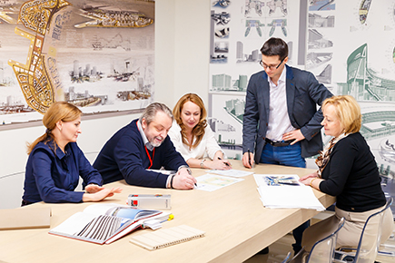
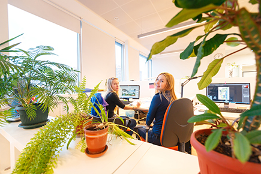
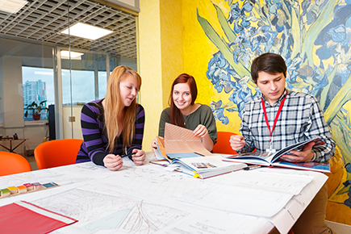
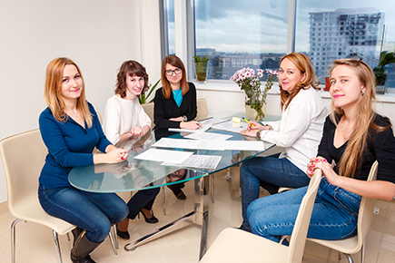
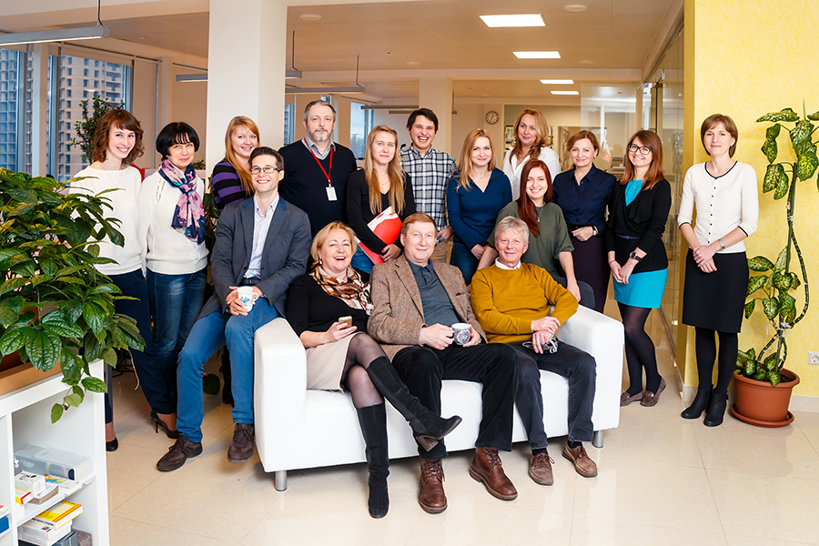

| ПОРТФОЛИО УСЛУГИ МАСТЕРСКАЯ КОНТАКТЫ |
Архитектурная мастерская ООО "Союз 55" занимает стабильную позицию на рынке проектных услуг уже на протяжении 23х лет, являясь членом Объединения Архитектурных Мастерских и членом Гильдии Архитекторов и Инженеров города Санкт-Петербурга. В составе мастерской работают неcколько десятков специалистов. Это коллектив под руководством Викторова Александра Павловича - члена-корреспондента Международной Академии Архитектуры, члена экспертного совета по градостроительству Государственной Думы, члена Градостроительного Совета города Санкт-Петербурга, объединяющий профессионалов с многолетним опытом работы в реконструкции, реставрации, в проектировании жилых и общественных зданий в том числе медицинских учреждений и молодых специалистов, день ото дня повышающих свой уровень мастерства и имеющих большой творческий потенциал. |
 |
|  |
Все сотрудники мастерской имеют высшее архитектурное или инженерное образование, что позволяет выполнять проекты любой сложности от эскизной стадии до рабочей документации. В распоряжении мастерской имеются большие по площади помещения в которых расположены рабочие места специалистов, имеющие современное программное обеспечение "REVIT" и "AutoCAD", множительная техника, переговорные. |
За время существования мастерской было выполнено большое количество проектов зданий различного назначения. Это торгово-развлекательные комплексы и общественно-деловые центры, многоквартирные жилые дома и малоэтажные жилые комплексы, гостиницы и больницы. Все проекты индивидуальные, многие из них выполнены для центральных районов города в условиях режима охранных зон. |
 |
|  |
Архитектурная мастерская в своем творчестве придерживается самобытной стилистической линии в архитектуре и постоянно находится в поиске новых композиционных решений, новаторских форм. |
|  | |
| АРХИТЕКТУРНАЯ МАСТЕРСКАЯ СОЮЗ 55 САНКТ ПЕТЕРБУРГ, ПР. МАРШАЛА БЛЮХЕРА 12, КОМПЛЕКС «АВМ», ОФИС 514. (812) 383 56 55 |